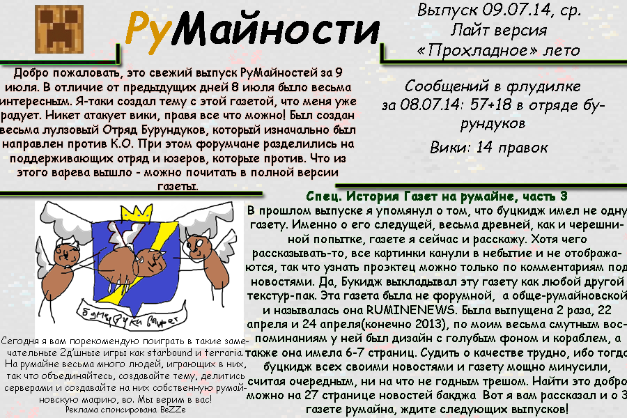
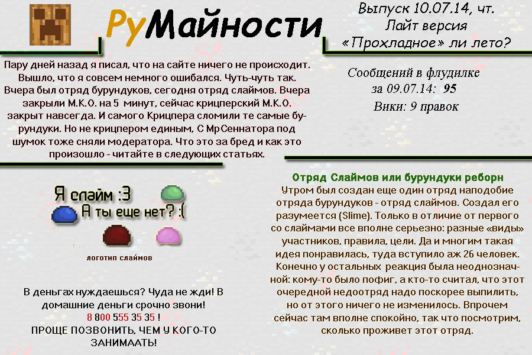

Румайности
[Январь 2013] --> Июль 2014 --> Нынешняя дата
Что это?
Румайности – это классная серия газет про события на не менее классном сайте ru-minecraft.ru. Если хочется узнать сводку новостей с Румине, то данная газета
это просто то, что доктор прописал!
Рецепт к употреблению следующий: берутся выпуски за нужную дату и читаются от корки до корки. В процессе обретается
просветление, и, скорее всего, сила земли.
История
Идея румайностей зародились на Румине весной 2013 года, а её автором являлся пользователь ЧеРеШня. Впрочем, идея идеей, а реализация принадлежит некоему Аллеху ака Allexx'у, который эти строки как бы и написал. Вот с тех пор он-то и делает эти самые выпуски газеты в их актуальном виде.
Ну хорошо
Без Румине и его пользователей писать газету было бы тяжко. Эти шельмецы своей акт*вностью создают события, классные картинки и прочий контент, который потом и собирается в выпуски газеты! Так что им вручается большая такая благодарность. Равно как и всем читателям, вот.
Эпизоды Румайностей? Что это?
Выпуски газеты написанные многим позже описываемого периода и своей указанной "даты выпуска". При их создании у меня была тактика, и я её придерживался:
-
Автор газеты (это я) не знает про события после даты выхода газеты и пишет в стиле своего времени
-
Отсутствие изображений, которые могут получены только после выхода газеты
-
Особенности изложения событий древних времен:
- Множественное использование более недоступных цитат пользователей (эксклюзивный контент)
- Сопровождение цитат пользователей их аватаркой, стоявшей в дату написания сообщения
- Использование рейджей Румине, потому что они доносят Суть™
- Наличие ссылки на источник в веб-архиве
-
Все изложенные сведения классные, достоверные и проверенные. Что не проверено, то написано шутливо. Что не шутливо, того в газете нет вообще!
Пускай "эпизоды румайностей" и написаны в 2021, но давайте на секунду притворимся, будто они действительно были написаны в прошлом =) Было бы классно.
Выпуски
| Превью | Формат | Описываемый период | Ссылка |
|---|---|---|---|
| 2013 [эпизоды румайностей] | |||
 |
веб-версия |
Январь 2013 года |
Выпуск 26 января 2013 |
|
веб-версия |
Декабрь 2012 года |
Выпуск 1 января 2013 |
| 2019-2020 | |||
|
веб-версия |
2020 год |
Выпуск 21 октября 2020 |
|
веб-версия |
2019 год |
Выпуск 21 октября 2019 |
| Весна 2015 [2-й сезон] | |||
 |
Картинка |
26 марта 2015 |
Выпуск 26 марта 2015 |
 |
Картинка |
25 марта 2015 |
Выпуск 25 марта 2015 |
| Лето 2014 [1-й сезон] | |||
 |
Картинка |
7 июля 2014 |
Выпуск 7 июля 2014 |
|
Картинка |
8 июля 2014 |
Выпуск 8 июля 2014 |
|  | Картинка |
9 июля 2014 |
Выпуск 9 июля 2014 |
|  | Картинка |
10 июля 2014 |
Выпуск 10 июля 2014 |
 |
Картинка |
11 июля 2014 |
Выпуск 11 июля 2014 |
 |
Картинка |
12 июля 2014 |
Выпуск 12 июля 2014 |
 |
Картинка |
13 июля 2014 |
Выпуск 13 июля 2014 |
 |
Картинка |
14 июля 2014 |
Выпуск 14 июля 2014 |
{kind=link}
{kind=link}